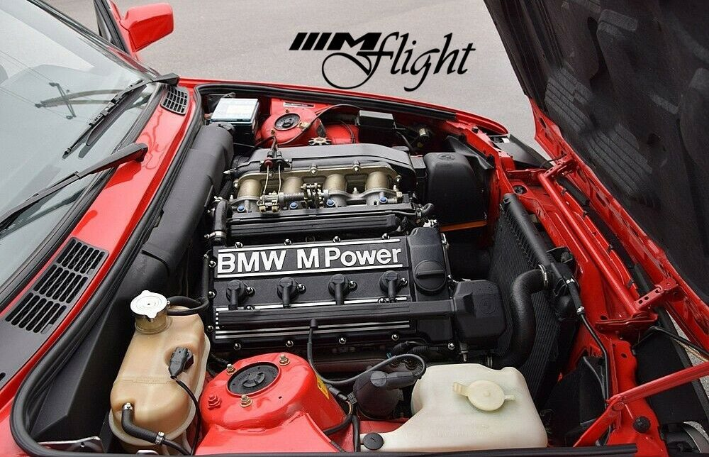

BMW E30 M3
El BMW E30 M3 es uno de los modelos más icónicos y queridos de BMW, especialmente dentro de la serie 3. Lanzado en 1986, este modelo se creó para competir en el campeonato de turismos alemán, el DTM, así como en otras competiciones de automovilismo. Como requisito, BMW necesitaba fabricar una versión de calle homologada para que el coche pudiera participar en carreras, y de ahí surgió el M3 de la serie E30.
Historia
El BMW E30 es una generación icónica de la Serie 3 de BMW, producida entre 1982 y 1994, que dejó una huella imborrable en la historia automotriz. Presentado en 1982 como el sucesor del E21, el E30 fue un éxito tanto por su diseño deportivo y elegante como por su excelente rendimiento. Este modelo fue el primero en la Serie 3 en ofrecer una versión con tracción en las cuatro ruedas (325iX) y en incorporar una variante con carrocería familiar (Touring).
El E30 ganó notoriedad especial con el lanzamiento de su versión de alto rendimiento, el BMW M3, en 1986. Este modelo, creado inicialmente para competencias, rápidamente se convirtió en un favorito de los entusiastas gracias a su potencia, maniobrabilidad y éxito en carreras de turismos. El M3 del E30, con su motor S14 y diseño aerodinámico, es aún considerado uno de los autos deportivos más importantes de BMW.
Además, el E30 ofrecía diversas opciones de motorización, desde los eficientes motores de cuatro cilindros hasta los potentes seis cilindros en línea, destacando por su equilibrio entre comodidad y prestaciones deportivas. Esta generación sigue siendo muy valorada en el mercado de autos clásicos y de coleccionistas debido a su diseño intemporal, ingeniería precisa y durabilidad.
Motorización
| Motor S14B23 |
|
El BMW E30 M3 utiliza un motor de cuatro cilindros en línea, conocido como el S14B23, que tiene un desplazamiento de 2.3 litros y fue desarrollado específicamente para esta versión. A diferencia de otros E30, que usaban motores de seis cilindros en línea, BMW optó por un motor más compacto y ligero para mejorar el equilibrio y la maniobrabilidad del auto, características esenciales para el automovilismo de competición.
La versión de calle montaba un motor de 4 cilindros en línea de 2.3 litros, conocido como el S14, que producía alrededor de 195-215 caballos de fuerza en sus distintas versiones. Era un motor ligero y de alta compresión, diseñado para un rendimiento óptimo en pistas.
Fue diseñado para el éxito en las pistas de carreras y desarrollado en paralelo con el DTM (Deutsche Tourenwagen Masters), una de las series de automovilismo más prestigiosas de Alemania. Para competir, BMW necesitaba producir una versión de calle, lo que resultó en el icónico E30 M3. Su motorización fue uno de los elementos clave que lo convirtieron en un clásico legendario.
|
|  |
 |
 |